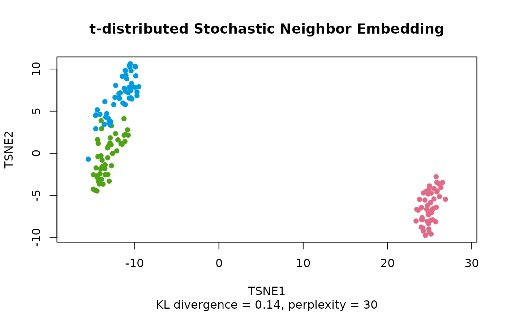

Ordinates samples from their distances, for plotting beta diversity, by
placing samples that are near neighbors in dm near each other on the
plot. t-SNE is good at showing clusters, but the distances between
clusters, and their sizes, mean little. A port of scikit-learn's TSNE
(with metric = "precomputed") to parallel C, with exact and Barnes-Hut
gradients, that never copies dm into an \(n \times n\) matrix.
Usage
tsne(
dm,
n_axes = 2L,
perplexity = 30,
theta = 0.5,
gradient = "auto",
init = "pcoa",
max_iters = 1000L,
early_exaggeration = 12,
learning_rate = "auto",
seed = 0L,
cpus = n_cpus()
)Arguments
- dm
A
distobject, such as frombeta_div()orbray(), or a symmetric numeric matrix of distances. Must not containNAs or negative values. Its scale doesn't matter (see "Scale").- n_axes
The number of dimensions. Default:
2- perplexity
Roughly, how many neighbors each sample's neighborhood counts. Must be at least 1; values above \((n - 1) / 3\) are reduced to that (see "Perplexity and small datasets" below). Typical values are 5 to 50. Default:
30- theta
Accuracy of the Barnes-Hut gradient, from 0 (exact, and slow) to 1 (fast, and rough): a group of samples is treated as one point when its cell's width, divided by its distance, is below
theta. scikit-learn calls itangle. Not used by the exact gradient. Default:0.5- gradient
How to compute the gradient:
"exact","barnes_hut", or"auto"(the default), which uses"exact"for up to 500 samples, or whenk > 3, and"barnes_hut"otherwise. (scikit-learn calls itmethod.)- init
The starting layout:
"pcoa"(the default),"random", or a numeric matrix with one row per sample, in the same order asdm, andn_axescolumns, none of them constant (a constant column could never move). See "Starting layout" below.- max_iters
The most iterations to run, including the first 250 with early exaggeration. The run stops sooner when it stops improving (see "Method"). Default:
1000- early_exaggeration
How much to multiply the affinities by during the first 250 iterations, which pulls clusters apart early on. Must be at least 1. Default:
12- learning_rate
The step size: a positive number, or
"auto"(the default) for \(\max(n / early\_exaggeration / 4, 50)\), as in scikit-learn.- seed
An integer seed for the random starting layout. The same seed gives the same result. Not used when
initis a matrix, nor by a PCoA start withn_axesaxes. Default:0- cpus
How many parallel processing threads should be used. The default,
n_cpus(), is the CPU cores this R process may use, within any limits set on it. Results are the same for anycpus.
Value
A numeric matrix with one row per sample and one column per
dimension, named "TSNE1", "TSNE2", etc., as described in "Ordination
result" below. method is "tsne"; eig and prop are NA, as t-SNE
has no eigenvalues. Then come:
kl_divergence: The Kullback-Leibler divergence of the result's affinities from the input affinities: the quantity t-SNE minimizes. With the Barnes-Hut gradient, it is the Barnes-Hut estimate.perplexity: The perplexity used, after any reduction.init: How the starting layout was chosen:"pcoa","random", or"matrix"(given ininit);"none"for fewer than 2 samples, which are all placed at 0.n_iters: The number of iterations run.learning_rate: The learning rate used.gradient:"exact"or"barnes_hut".
Details
Method
Each sample \(i\) gets a Gaussian distribution over the other samples,
\(p_{j|i} \propto \exp(-\beta_i d_{ij}^2)\), with \(\beta_i\) chosen by
binary search so that its perplexity (2 to the power of its entropy, in
bits) equals perplexity. The input affinities are
\(p_{ij} = (p_{j|i} + p_{i|j}) / 2n\). On the plot, the affinities are
\(q_{ij} \propto (1 + |y_i - y_j|^2)^{-1}\), a Student t distribution
with one degree of freedom, whose heavy tail lets dissimilar samples sit
far apart. t-SNE moves the points \(y_i\) to minimize the
Kullback-Leibler divergence \(\sum p_{ij} \log(p_{ij} / q_{ij})\) by
gradient descent, with momentum and per-coordinate gains: momentum 0.5
for the first 250 iterations, during which \(p_{ij}\) is multiplied by
early_exaggeration, then 0.8. Every 50 iterations, it stops if the
gradient's norm is below \(10^{-7}\), or if the divergence hasn't
improved for 300 iterations (after the first 250). These are
scikit-learn's defaults.
Exact and Barnes-Hut gradients
The exact gradient sums over every pair of samples, which takes time proportional to \(n^2\) per iteration. The Barnes-Hut approximation (van der Maaten 2014) takes time proportional to \(n \log n\):
Each sample's \(p_{j|i}\) is computed over its \(\lfloor 3 \times perplexity + 1 \rfloor\) nearest neighbors only (found exactly from
dm), and is 0 for the rest.The repulsion between points on the plot is computed from a tree of cells: a quadtree for
n_axes = 2, an octree forn_axes = 3, and a binary tree forn_axes = 1. A cell far enough away (seetheta) acts as one point at its center of mass.
The tree only exists for up to 3 dimensions, so larger n_axes always uses
the exact gradient. gradient = "auto" uses the exact gradient for up to
500 samples, where it is fast enough, and Barnes-Hut for more.
Perplexity and small datasets
Each sample needs at least \(3 \times perplexity\) neighbors, so
perplexity is reduced to \((n - 1) / 3\) when it is larger (but not
below 1), with a warning if you set perplexity yourself. For example,
40 samples allow a perplexity of up to 13. n_axes is used as given, even
when it is \(n\) or more.
Scale
t-SNE's affinities don't depend on the scale of dm, but finding them
does: each sample's binary search (as in scikit-learn) starts at a
precision of 1 and doubles or halves it at most 100 times, so it can't
reach the precision that distances far from 1 need, and their affinities
would come out uniform. So dm is first multiplied by a power of 2
(which is exact) that brings its largest distance to between 1 and 2;
multiplying dm by any power of 2 gives exactly the same result, and by
any other number, the same up to the search's tolerance. A sample whose
search still doesn't converge in those 100 steps (e.g. one whose nearest
neighbors are \(10^{-20}\) times closer than the farthest sample) is
searched again, starting from a better guess and with no limit on the
range.
Starting layout
t-SNE only finds a local minimum, and which one depends on the starting
layout. The default, "pcoa", starts from the first n_axes axes of
pcoa(), scaled so that the first has a standard deviation of
\(10^{-4}\), as scikit-learn scales its PCA start: this keeps more of
the data's global structure than a random start, and doesn't depend on a
seed (Kobak & Linderman 2021). Without n_axes axes with positive
eigenvalues, it starts at random instead. "random" draws each
coordinate from a normal distribution with a standard deviation of
\(10^{-4}\), from seed.
Speed and memory
Finding the affinities reads each distance twice (once for each of its
two samples), in parallel. Each sample's binary search then makes up to
100 passes over its \(3 \times perplexity + 1\) neighbors (Barnes-Hut)
or all \(n - 1\) other samples (exact). Each iteration takes time
proportional to \(k n^2\) (exact) or roughly
\(k n (\log n + 3 \times perplexity)\) (Barnes-Hut), divided among
cpus threads. The affinities are found in batches, between which the
computation can be interrupted.
Besides dm, the exact gradient keeps \(p_{ij}\) for every pair, 8
bytes per pair, the same as dm itself. Barnes-Hut keeps
\(n (3 \times perplexity + 1)\) to twice that many affinities, 12 bytes
each (and, while building them, two more lists of
\(n (3 \times perplexity + 1)\)), and a tree of at most \(2n\)
cells. While reading distances for the exact gradient, each thread also
holds 32 rows of them (\(256 n\) bytes).
Differences from scikit-learn
This is a port of scikit-learn 1.9.1's TSNE (BSD-3-Clause License,
Copyright (c) 2007-2026 The scikit-learn developers). From the same
affinities and starting layout, the exact gradient gives the same
iterations as scikit-learn's to within rounding; and, as in
scikit-learn, dm is squared before the affinities are found. These are
the differences:
Everything is computed in double precision. scikit-learn rounds the squared distances to single precision before finding the affinities, and runs Barnes-Hut in single precision, which changes affinities and gradients by about 1 part in \(10^7\). Since t-SNE is chaotic, two runs that differ by that much end at different (but equally good) layouts.
\(q_{ij}\) always has one degree of freedom. scikit-learn uses \(\max(k - 1, 1)\), i.e. 2 for
n_axes = 3, with a gradient that isn't exactly the divergence's for more than one degree of freedom. Forn_axes = 1andn_axes = 2, the two agree.The default start is PCoA. scikit-learn doesn't allow its PCA start with precomputed distances, so starts at random there. Random starts come from
seed(see "Reproducibility"), so they differ from scikit-learn's.gradient = "auto"uses the exact gradient for up to 500 samples; scikit-learn defaults to Barnes-Hut.dmis rescaled by a power of 2, and a binary search that doesn't converge is redone (see "Scale"). Where scikit-learn's search does converge, the affinities are the same to within its tolerance (identical if the largest distance is already between 1 and 2).A
perplexitytoo large for \(n\) is reduced instead of being an error; it must be at least 1. Anymax_itersof at least 1 is allowed (scikit-learn requires at least 250). A layout that diverges (e.g. from a far too largelearning_rate) is an error.The Barnes-Hut tree handles identical points exactly. scikit-learn's merges points within \(10^{-6}\) of each other on every axis and leaves out their repulsion from each other. A cell that holds the point being moved is never summarized (scikit-learn's can be, when
thetais above \(1/\sqrt{2}\) forn_axes = 2, or \(1/\sqrt{3}\) forn_axes = 3).Nearest neighbors with equal distances are chosen by sample order.
The gradient and the divergence leave out scikit-learn's lower limits on \(q_{ij}\) (\(2.2 \times 10^{-16}\) for the exact gradient, and single precision's smallest number for Barnes-Hut). They only matter for points about \(10^8\) times farther apart than usual.
The result is centered, and each axis is flipped so that its coordinate with the largest absolute value is positive, as for the other ordination methods.
kl_divergenceis that of the result, rather than of the layout before the last step, andn_iterscounts the iterations run (scikit-learn'sn_iter_is one less).
Compared with Rtsne()
Rtsne::Rtsne() (van der Maaten's bhtsne) runs the same kind of
optimization with different defaults: a random start, a learning rate of
200, Barnes-Hut whenever theta > 0, \(\lfloor 3 \times perplexity
\rfloor\) neighbors found with a vantage-point tree, and always exactly
max_iters iterations. init = "random", learning_rate = 200 comes close
to its procedure. The two don't give the same coordinates, but layouts of
the same quality: the tests check that the KL divergence and
trustworthiness are as good as Rtsne()'s on the same data.
Reproducibility
The result, including its attributes, is bit-for-bit identical from run
to run, in the same or a new R session, and for any number of cpus:
each quantity is computed by one thread in a fixed order, sums over
samples are taken in sample order, and all of it is in double precision
(not R's long double, whose precision varies between platforms). Random
starts come from a PCG random number generator seeded with seed, not
from R's, so set.seed() has no effect and R's random number stream is
left untouched. Different compilers, processors, or math libraries can
change the last bits of a result, which t-SNE amplifies, so other
platforms can give a different (but equally good) layout.
Ordination result
Every ordination function (pcoa(), pca(), rpca(), dbrda(), capda(),
capscale(), mds(), nmds(), isomap(), tsne(), umap(), and so
dist_ord()) returns the same kind of
object: a numeric matrix with one row per sample and one column per
axis, so that it can go straight into a data frame. Rows are
named after the samples, when the input has names. Columns are named
after the method: "PCoA1", "PC1", "RPCA1", "dbRDA1" or "CAP1"
(then "MDS1" for unconstrained axes), "MDS1", "NMDS1",
"Isomap1", "TSNE1", "UMAP1", and so on.
Its attributes always begin with these three, in this order, each with one value per column:
method: The method's ID, e.g."pcoa"or"nmds".eig: Each axis's eigenvalue, on the method's own scale:pcoa()andisomap()give the eigenvalues of Gower's centered matrix (sums of squares);pca()andrpca()give variances, which arepcoa()'s divided by \(n - 1\) for \(n\) samples; anddbrda()andcapscale()followvegan, which also divides by \(n - 1\) when any distance is 4 or more.NAformds(),nmds(),tsne(), andumap(), which have no eigenvalues.prop: The proportion of the total variance (or inertia) that each axis explains. Unlikeeig, it is comparable between methods, so use it to label axes.NAwhere it isn't defined.
Attributes particular to the method follow them, and last display,
with the ordination's title for plot() and print(): the method's
name, and for the methods that take distances, the distance matrix's
title, such as "Principal Coordinates Analysis of Bray-Curtis
Dissimilarity" (see ecodive_display). The matrix has class
"ecodive_ord" (as well as "matrix"), so that print() lists the
other attributes by name rather than in full, and plot() draws the
samples on the first two axes, labelled from the attributes, with any
loadings, constraints and centroids on top (see plot.ecodive_ord()).
plot(ord, "Species", iris) colours the samples by a column of
metadata. Subsetting with [, or as.data.frame(), gives a plain
matrix or data frame without the attributes.
References
van der Maaten, L., & Hinton, G. (2008). Visualizing data using t-SNE. Journal of Machine Learning Research, 9(86), 2579-2605. https://jmlr.org/papers/v9/vandermaaten08a.html
van der Maaten, L. (2014). Accelerating t-SNE using tree-based algorithms. Journal of Machine Learning Research, 15(93), 3221-3245. https://jmlr.org/papers/v15/vandermaaten14a.html
Belkina, A. C., Ciccolella, C. O., Anno, R., Halpert, R., Spidlen, J., & Snyder-Cappione, J. E. (2019). Automated optimized parameters for T-distributed stochastic neighbor embedding improve visualization and analysis of large datasets. Nature Communications, 10, 5415. doi:10.1038/s41467-019-13055-y
Kobak, D., & Linderman, G. C. (2021). Initialization is critical for preserving global data structure in both t-SNE and UMAP. Nature Biotechnology, 39, 156-157. doi:10.1038/s41587-020-00809-z
Pedregosa, F., et al. (2011). Scikit-learn: Machine learning in Python. Journal of Machine Learning Research, 12, 2825-2830. https://jmlr.org/papers/v12/pedregosa11a.html
Examples
dm <- bray(iris[, 1:4])
ord <- tsne(dm)
plot(ord, 'Species', iris)

ord
#> # A matrix: 150 samples × 2 axes
#> # t-distributed Stochastic Neighbor Embedding of Bray-Curtis Dissimilarity
#> TSNE1 TSNE2
#> 1 25.1 -6.86
#> 2 24.9 -4.25
#> 3 25.9 -4.58
#> 4 25.5 -4.18
#> 5 25.3 -6.65
#> 6 24.2 -8.87
#> 7 26.2 -5.14
#> 8 24.7 -6.19
#> 9 25.9 -3.44
#> 10 24.6 -4.56
#> # … 140 more samples
#> # Use print(x, n = ...) to see more samples
#> # Attributes: method, eig, prop, kl_divergence, perplexity, init, n_iters,
#> # learning_rate, gradient
str(ord)
#> 'ecodive_ord' num [1:150, 1:2] 25.1 24.9 25.9 25.5 25.3 ...
#> - attr(*, "dimnames")=List of 2
#> ..$ : NULL
#> ..$ : chr [1:2] "TSNE1" "TSNE2"
#> - attr(*, "method")= chr "tsne"
#> - attr(*, "eig")= num [1:2] NA NA
#> - attr(*, "prop")= num [1:2] NA NA
#> - attr(*, "kl_divergence")= num 0.14
#> - attr(*, "perplexity")= num 30
#> - attr(*, "init")= chr "pcoa"
#> - attr(*, "n_iters")= int 1000
#> - attr(*, "learning_rate")= num 50
#> - attr(*, "gradient")= chr "exact"
#> - attr(*, "display")=List of 1
#> ..$ title: chr "t-distributed Stochastic Neighbor Embedding of Bray-Curtis Dissimilarity"